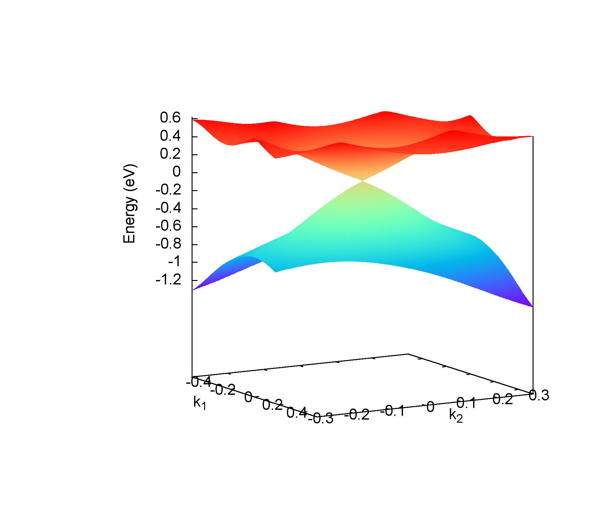

1.3. Capabilities of WannierTools¶
- Bulk band calculation (line mode and plane mode)
- BulkFS calculation
- Density state(DOS) calculations
- Find Nodes calculation
- Energy gap calculations (plane and cube mode)
- Slab band calculation
- Nanowire/nanoribbon band calculation
- Surface state ARPES calculation
- Surface state QPI calculation
- Fermi arc calculation
- Spin texture calculation
- Berry phase calculation
- Berry curvature calculation
- Wannier charge center/Wilson loop calculation
- Z2 number for 3D bulk materials
- Chern number for 3D bulk materials
- Weyl Chirality calculation
- Landau level calculations
1.3.1. Bulk band calculation (line mode and plane mode)¶
Line mode¶
Calculate bulk energy band for a series k lines. This is the basic calculation after the construction of Wannier functions. You have to compare your Wannier interpolated bands with the DFT bands. Those two bands should match well around the Fermi level.
Input¶
Typical flags for bulk band calculation in the wt.in.
&CONTROL
BulkBand_calc = T
/
&PARAMETERS
Nk1 = 101 ! Number of k points for each k line
/
KPATH_BULK ! k point path
4 ! number of k lines only for bulk band
G 0.00000 0.00000 0.0000 Z 0.00000 0.00000 0.5000
Z 0.00000 0.00000 0.5000 F 0.50000 0.50000 0.0000
F 0.50000 0.50000 0.0000 G 0.00000 0.00000 0.0000
G 0.00000 0.00000 0.0000 L 0.50000 0.00000 0.0000
See CONTROL, PARAMETERS, KPATH_BULK
Output¶
The outputs for bulk band calculation are bulkek.dat and bulkek.gnu. You can get the band plot by running
gnuplot bulkek.gnu
or
xmgrace bulkek.dat
to get bandstucture plot.
The data structure for bulkek.dat
0.000000000 -2.673821992 119 80 80 119 80 80 205 138 138 70 40 40 70 40 40 0 0 0 0 0 0 0 0 0 0 0 0 0 0 0
0.016453872 -2.681536808 118 78 78 118 78 78 203 134 134 82 41 41 82 41 41 0 0 0 0 0 0 0 0 0 0 0 0 0 0 0
- The 1st column represents k points for the given kpath (KPATH_BULK)
- The 2nd column is the energy level
- From the 3rd to the n’th column are the projected weight of the wave function at each k point and each band onto each wannier orbitals. Those weights are normalized to 255 for the color plot convinence.
The subrotine for this feature is :f:func:`ek_bulk`
Plane mode¶
Calculate band structure in a k slice(plane) specified by KPLANE_BULK card. The mode is very useful to visualize the Dirac/Weyl cone. You have to set the following tags in wt.in
&CONTROL
BulkBand_plane_calc = T
/
&PARAMETERS
Nk1 = 51 ! Number of k points along the first vector in KPLANE_BULK
Nk2 = 51 ! Number of k points along the second vector in KPLANE_BULK
/
KPLANE_BULK ! fractional coordinates
0.00 0.00 0.30 ! Middle point for a k slice(plane) in 3D BZ. Usually, the position of Dirac points.
0.50 0.00 0.00 ! The first vector to define k plane(slice) in 3D BZ
0.00 0.50 0.00 ! The second vector to define k plane(slice) in 3D BZ
The output file is bulkek_plane.dat, bulkek_plane-matlab.dat and bulkek_plane.gnu. You can get bulkek_plane.png with
gnuplot bulkek_plane.gnu
The bulkek_plane-matlab.dat is in MATLAB data format. You can plot the Dirac cone with matlab.
The format of bulkek_plane.dat is as follows:
# kx ky kz k1 k2 k3 E(Numoccupied-1) E(Numoccupied) E(Numoccupied+1) E(Numoccupied+2)
-0.299354337 -0.518496963 0.180167841 -0.518496936 -0.299354384 0.180167841 -1.311721381 -1.311705191 0.588683811 0.588872215
-0.299354337 -0.504670376 0.180167841 -0.511583643 -0.287380208 0.180167841 -1.294078082 -1.293904952 0.586780093 0.587249790
...
Column 1-3rd are k points in cartesian coordinates. Column 4-6th are k points in a rotated cartesian coordinates where the x and y direction are line in the k plane and the z direction is perpendicular to the k plane you specified. Column 7-10th are energies at each k point. Here we only print out 4 energy bands around the fermilevel. It depends on NumOccupied. Usually, I choose column 4th and 5th as k coordinates and choose 8 and 9 as energy bands to show the Dirac cone shown below.
{kind=link}
1.3.2. BulkFS calculation¶
Bulk Fermi surface calculation.
Input¶
You should specify the number of k points for each three reciprocal vectors Nk1, Nk2, Nk3 in NAMELISTS PARAMETERS
&CONTROL
BulkFS_calc = T
/
&PARAMETERS
Nk1 = 101 ! No. of slices for the 1st reciprocal vector
Nk2 = 101 ! No. of slices for the 2nd reciprocal vector
Nk3 = 101 ! No. of slices for the 3rd reciprocal vector
/
KCUBE_BULK
0.00 0.00 0.00 ! Original point for 3D k plane
1.00 0.00 0.00 ! The first vector to define 3d k space plane
0.00 1.00 0.00 ! The second vector to define 3d k space plane
0.00 0.00 1.00 ! The third vector to define 3d k cube
See CONTROL, PARAMETERS
1.3.3. Density state(DOS) calculations¶
Calculation density of state for the bulk system. The typical setup in wt.in:
&CONTROL
DOS_calc = T
/
&PARAMETERS
OmegaNum = 601 ! number of slices of energy
OmegaMin = -1.0 ! erergy range for DOS
OmegaMax = 1.0
Nk1 = 51 ! No. of slices for the 1st reciprocal vector
Nk2 = 51 ! No. of slices for the 2nd reciprocal vector
Nk3 = 51 ! No. of slices for the 3nd reciprocal vector
/
KCUBE_BULK
0.00 0.00 0.00 ! Original point for 3D k plane
1.00 0.00 0.00 ! The first vector to define 3d k space plane
0.00 1.00 0.00 ! The second vector to define 3d k space plane
0.00 0.00 1.00 ! The third vector to define 3d k cube
Outputs are dos.dat and dos.gnu. dos.eps will be obtained with
gnuplot dos.gnu
1.3.4. Energy gap calculations (plane and cube mode)¶
We support two modes for energy gap calculations.The formula is \(gap(k)= E_{NumOccupied+1}(k)- E_{NumOccpuied}(k)\)
Gap_plane mode¶
Calculate the energy gap for the k points in the KPLANE_BULK. This is useful to show Weyl points and nodal line structure.
Input¶
Typical input parameters for BulkGap_plane calculation
&CONTROL
BulkGap_Plane_calc = T
/
&PARAMETERS
Nk1 = 101 ! No. of slices for the 1st reciprocal vector
Nk2 = 101 ! No. of slices for the 2nd reciprocal vector
/
KPLANE_BULK
0.00 0.00 0.00 ! Original point for 3D k plane
1.00 0.00 0.00 ! The first vector to define 3d k space plane(slice)
0.00 0.50 0.00 ! The second vector to define 3d k space plane(slice)
See CONTROL, PARAMETERS, KPATH_BULK
Output¶
The outputs for Gap_plane mode are GapPlane.dat, GapPlane.gnu. The GapPlane.png will get by
gnuplot GapPlane.gnu
The head of GapPlane.dat
kx ky kz gap Ev4 Ev3 Ev2 Ev1 Ec1 Ec2 Ec3 Ec4 k1 k2 k3
0.00000000 0.00000000 0.00000000 0.45569845 -0.69109275 -0.69109055 -0.29654328 -0.29654073 0.15915772 0.15915871 1.24348171 1.24348457 0.00000000 0.00000000 0.00000000
0.03796028 -0.02191637 0.00548462 0.43770730 -0.77636510 -0.77598312 -0.26035113 -0.26027881 0.17742849 0.17771545 1.29499437 1.29505298 0.00000000 0.02500000 0.00000000
- Column 1-3 are the Cartesian coordinates of the k points in the KPLANE_BULK, in unit of \(\frac{1}{Angstrom}\)
- Column 4 is the energy gap
- Column 5-12 are the energy value for valence and conduction bands close to the Fermi level. There are 4 conduction bands and 4 valence bands.
- Column 13-15 are the Direct coordinates of the k points in the KPLANE_BULK
Gap_Cube mode¶
This helps us to find Weyl points and nodal line structure in the 3D BZ.
Typical input parameters for BulkGap_cube calculation
&CONTROL
BulkGap_Cube_calc = T
/
&PARAMETERS
Nk1 = 101 ! No. of slices for the 1st reciprocal vector
Nk2 = 101 ! No. of slices for the 2nd reciprocal vector
Nk3 = 101 ! No. of slices for the 3rd reciprocal vector
/
KCUBE_BULK
-0.50 -0.50 -0.50 ! Original point for 3D k plane
1.00 0.00 0.00 ! The 1st vector to define 3d k cube
0.00 1.00 0.00 ! The 2nd vector to define 3d k cube
0.00 0.00 1.00 ! The 3rd vector to define 3d k cube
See CONTROL, PARAMETERS, kcubebulk
The outputs for Gap_plane mode are GapCube.dat, GapCube.gnu. The GapCube.png will get by
gnuplot GapCube.gnu
The head of GapCube.dat are
kx (1/A) ky (1/A) kz (1/A) Energy gap Ev Ec k1 (2pi/a) k2 (2pi/b) k3 (2pi/c)
0.00000000 0.87665487 -0.54846229 0.79075142 -0.34827281 0.44247861 -0.50000000 -0.50000000 -0.50000000
0.00000000 0.87665487 -0.51555455 0.86792416 -0.38635069 0.48157346 -0.50000000 -0.50000000 -0.45000000
- Column 1-3 are the Cartesian coordinates of the k points where energy gap is small than Gap_threshold, in unit of \(\frac{1}{Angstrom}\)
- Column 4 is the energy gap. Those values are smaller than Gap_threshold, see PARAMETERS
- Column 5-6 are the energy value for valence and conduction bands close to the Fermi level. There are 4 conduction bands and 4 valence bands.
- Column 7-9 are the Direct coordinates of the k points.
1.3.5. Find Nodes calculation¶
Beside by using GapCube and GapPlane to find Weyl/Dirac nodes or node lines, we can directly using FindNodes function. \(gap(k)= E_{NumOccupied+1}(k)- E_{NumOccpuied}(k)\)
Input¶
Typical input parameters for FindNodes_cube calculation
&CONTROL
FindNodes_calc = T
/
&PARAMETERS
Nk1 = 8 ! No. of slices for the 1st reciprocal vector
Nk2 = 8 ! No. of slices for the 2nd reciprocal vector
Nk3 = 8 ! No. of slices for the 3rd reciprocal vector
Gap_threshold = 0.0001 ! a value to determine which point should be identified as a node
/
KCUBE_BULK
-0.50 -0.50 -0.50 ! Original point for 3D k plane
1.00 0.00 0.00 ! The 1st vector to define 3d k cube
0.00 1.00 0.00 ! The 2nd vector to define 3d k cube
0.00 0.00 1.00 ! The 3rd vector to define 3d k cube
Note
Please don’t set Nk1, Nk2, Nk3 too large. Otherwise, it will become very time consuming. Usually, 15*15*15 is enough to get converged number of Weyl/Dirac points.
Output¶
Outputs are Nodes.dat and Nodes.gnu. Nodes.png will be obtained by
gnuplot Nodes.gnu
Here are heads of output for WTe2 Nodes.dat
# local minimal position and the related energy gap
# kx ky kz gap E k1 k2 k3
0.219436 -0.045611 -0.000001 0.000000 0.056688 0.121432 -0.045363 -0.000003
-0.219515 -0.045063 -0.000001 0.000000 0.056461 -0.121476 -0.044818 -0.000002
0.220195 -0.038682 -0.000002 0.000000 0.051264 0.121852 -0.038472 -0.000003
-0.220183 -0.038936 -0.000001 0.000000 0.051618 -0.121845 -0.038724 -0.000003
0.219514 0.045063 0.000001 0.000000 0.056459 0.121475 0.044818 0.000003
-0.219434 0.045620 0.000002 0.000000 0.056692 -0.121431 0.045371 0.000004
-0.220194 0.038678 0.000000 0.000000 0.051259 -0.121851 0.038468 0.000001
0.220181 0.038941 0.000000 0.000000 0.051620 0.121844 0.038729 0.000001
You will find that there are 8 Weyl points in the BZ as expected.
1.3.6. Weyl Chirality calculation¶
After you identify the positions of Weyl points, you could use this function to calculate the chirality, which tells you whether a Weyl point is a sink or a source of the Berry Curvature.
Input¶
Typical input parameters for WeylChirality_calc calculation
&CONTROL
WeylChirality_calc = T
/
&PARAMETERS
Nk1 = 41 ! No. of slices for the 1st reciprocal vector, berry phase integration direction
Nk2 = 21 ! No. of slices for the 2nd reciprocal vector
/
WEYL_CHIRALITY
8 ! Num_Weyls
Cartesian ! Direct or Cartesian coordinate
0.004 ! Radius of the ball surround a Weyl point
0.219436 -0.045611 -0.000000 ! Positions of Weyl points, No. of lines should larger than Num_weyls
-0.219515 -0.045063 -0.000000
0.220195 -0.038682 -0.000000
-0.220183 -0.038936 -0.000000
0.219514 0.045063 0.000000
-0.219434 0.045620 0.000000
-0.220194 0.038678 0.000000
0.220181 0.038941 0.000000
Outputs are wanniercenter3D_Weyl.dat and wanniercenter3D_Weyl_i.gnu. wanniercenter3D_Weyl.png will be obtained by
gnuplot wanniercenter3D_Weyl_i.gnu
for ((i=1; i<9; i++)); do gnuplot wanniercenter3D_Weyl_$i.gnu;done
Note
i is an integer from 1 to Num_weyls
Here are heads of output for WTe2 wanniercenter3D_Weyl.dat
# Chirality -1 1 1 -1 1 -1 1 -1
# k phase phase phase phase phase phase phase phase
0.00000000 0.99970932 0.00005854 0.00004671 0.99975139 0.00005851 0.99970861 0.00004736 0.99975087
0.05000000 0.89229069 0.08696587 0.08941971 0.90855415 0.08723118 0.89170870 0.09022452 0.90795187
0.10000000 0.79659821 0.16589558 0.17112299 0.82248889 0.16697194 0.79511289 0.17279423 0.82108022
The first line shows the chiralities of each Weyl point. The first column is k point. From the 2nd to the last column show the Wannier charge center phase. In total, there are Num_weyls columns.
1.3.7. Slab band calculation¶
Before using iterative green’s function to get the surface state spectrum for semi-infinite system. We also can just construct a finite thickness slab system and calculate the band structure for it.
Note
For slab calculations, please read carefully the input card SURFACE
Input¶
&CONTROL
SlabBand_calc = T
/
&SYSTEM
NSLAB = 10
/
&PARAMETERS
Nk1 = 101 ! No. of slices for the 1st reciprocal vector
/
KPATH_SLAB
2 ! numker of k line for 2D case
K 0.33 0.67 G 0.0 0.0 ! k path for 2D case
G 0.0 0.0 M 0.5 0.5
See CONTROL, SYSTEM PARAMETERS, KPATH_SLAB
Output¶
Outputs are slabek.dat and slabek.gnu
The heads of slabek.dat are
0.0000000 -4.9575466 240
0.0508687 -5.0110528 226
0.1017373 -5.0566963 221
0.1526060 -5.0671994 220
...
- The 1st column are k points in the KPATH_SLAB
- The 2nd column are energy values.
- The 3rd column represent the surface weight, which is normalized to 255.
The colorfull plot slabek.png of the slab energy bands can be obtained by
gnuplot slabek.gnu
1.3.8. Nanowire/nanoribbon band calculation¶
Band calculation for wire system. Only one direction is periodic, the other two directions are confined.
Input¶
You don’t have to set the k path, because it only has one direction.
&CONTROL
WireBand_calc = T
/
&SYSTEM
NSLAB1 = 4
NSLAB2 = 4
/
&PARAMETERS
Nk1 = 101 ! No. of slices for the 1st reciprocal vector
/
See CONTROL, SYSTEM PARAMETERS
Output¶
Outputs are ribbonek.dat and ribbonek.gnu. The data format of ribbonek.dat is the same as slabek.dat. Get plot ribbonek.png with
gnuplot ribbonek.gnu
1.3.9. Surface state ARPES calculation¶
One important feature for topological materials is the surface state. The bulk-edge correspondence tells us, if the topological property of the bulk system is nontrivial, then there will be nontrivial states on the surface. Nowadays, there are several method to detect the surface states. One direct way is the angle resolved photoemission spectroscopy (ARPES). Such spectrum can be obtained by the iterative Green’s function.
Note
For slab calculations, please read carefully the input card SURFACE
Input¶
&CONTROL
SlabSS_calc = T
/
&PARAMETERS
OmegaNum = 101
OmegaMin = -1.0
OmegaMax = 1.0
Nk1 = 101 ! No. of slices for the 1st reciprocal vector
NP = 2 ! principle layer
/
KPATH_SLAB
2 ! numker of k line for 2D case
K 0.33 0.67 G 0.0 0.0 ! k path for 2D case
G 0.0 0.0 M 0.5 0.5
See CONTROL, PARAMETERS, KPATH_SLAB
NP : integer valued, Number of principle layers, see details related to iterative green’s function. Used if SlabSS_calc= T, SlabArc_calc=T, SlabSpintexture_calc=T. Default value is 2. You need to do a convergence test by setting Np= 1, Np=2, Np=3, and check the surface state spectrum. Basically, the value of Np depends on the spread of Wannier functions you constructed. One thing should be mentioned is that the computational time grows cubically of Np.
Output¶
The output files are surfdos_l.dat, surfdos_r.dat, surfdos_l.gnu, surfdos_r.gnu. You could get the the spectral function plots with
gnuplot surfdos_l.gnu
gnuplot surfdos_r.gnu
_l and _r means the top and bottom surface.
1.3.10. Surface state QPI calculation¶
Settings for this feature are almost the same as Fermi arc calculation. Only difference is that you should set
&CONTROL
SlabQPI_calc = T
/
Output¶
- There are a lot of outputs for QPI calculation. including
arc.dat_l, arc.dat_r, arc_l.gnu, arc_r.gnu, arc_l_only.gnu, arc_l_only.gnu, arc.jdat_l, arc.jdat_r, arc.jsdat_l, arc.jsdat_r, arc_l_jdos.gnu, arc_l_jsdos.gnu, arc_r_jdos.gnu, arc_r_jsdos.gnu.
The gnu script with ‘only’ means we only plot the spectrum with the surface contribution, exclude the bulk contribution. jdat_l is the QPI data without consideration of spin scattering. jsdat_l is the QPI data in consideration of spin scattering.
1.3.11. Fermi arc calculation¶
Surface state spectrum at fixed energy level E_arc set in NAMELISTS PARAMETERS . Set SlabArc_calc=T, and set Nk1, Nk2, in NAMELISTS PARAMETERS, set k plane in KPLANE_SLAB CARD. Get the plots with “gnuplot arc_l.gnu”, “gnuplot arc_r.gnu”. _l and _r means the top and bottom surface.
1.3.12. Spin texture calculation¶
Spin texture calculation at fixed energy level E_arc set in NAMELISTS PARAMETERS . Set Slabspintexture_calc=T, and set Nk1, Nk2, in NAMELISTS PARAMETERS, set k plane in KPLANE_SLAB CARD. Get the plots with “gnuplot spintext_l.gnu”, “gnuplot spintext_r.gnu”.
1.3.13. Berry phase calculation¶
Calculate Berry phase of a closed k path in 3D BZ. This is useful in a nodal line system. It is demonstrated that the Berry phase around a closed mirror symmetric k loop is either 0 or pi for a mirror protect nodal line system.
In WannierTools, you can specify a k path by a serials k points. Here we take the WC example, which has two nodal lines around K point.
Input¶
&CONTROL
BerryPhase_calc = T
/
&SYSTEM
NumOccupied = 10 ! Number of occupied Wannier orbitals
/
&PARAMETERS
Nk1 = 21 ! No. of slices for the 1st reciprocal vector
/
KPATH_BERRY
11
Direct
0.3 0.333 -0.2
0.3 0.333 -0.1
0.3 0.333 -0.0
0.3 0.333 0.1
0.3 0.333 0.2
0.33 0.333 0.2
0.33 0.333 0.1
0.33 0.333 0.0
0.33 0.333 -0.1
0.33 0.333 -0.2
0.3 0.333 -0.2
Output¶
The value of Berry phase can be found in the WT.out.
Note
1. In principlely, the Berry phase for around a nodal line should be interger. However, the MLWF-TB model usally is not symmetric. So the value of Berry phase is close to zero or one.
- The first and the last kpoints in the KPATH_BERRY should be the same to form a loop.
1.3.14. Berry curvature calculation¶
Calculate Berry curvature at a fixed k plane in 3D BZ. Set BerryCurvature_calc=T, and set Nk1, Nk2, in NAMELISTS PARAMETERS, set k plane in KPLANE_BULK CARD. Get the plot with “gnuplot Berrycurvature.gnu”.
please set NumOccpuied correctly. It represents the “occpuied” wannier bands, not the total number of electrons. In this application, the Berrycurvature is the summation over NumOccupied bands.
1.3.15. Wannier charge center/Wilson loop calculation¶
Wannier charge center, which is sometimes called Wilson loop can be calculated by set WannierCenter_calc=T and set KPLANE_BULK CARD, set number of k points for two vectors is Nk1, Nk2 in NAMELISTS PARAMETERS. Notice: You should notice that the first vector in KPLANE_BULK CARD is the integration direction, this vector should be equal to one primitive reciprocal lattice vector. If you want to calculate the Z2 number, Please set the second vector to be half of the reciprocal lattice vector. You can get the Wannier charge center along the second k line. See more details In the paper written by Alexey. Soluyanov (2011).
Note
Important: please set NumOccpuied correctly. It represents the “occpuied” wannier bands, not the total number of electrons. In this application, the Wilson loop is the trace of NumOccupied bands. If you want to study the topology between the 8th and the 9th band, then set NumOccupied=8.
Output¶
Outputs are wcc.dat and wcc.gnu, the format of wcc.dat is:
# k largestgap sum(wcc(:,ik)) wcc(i, ik)(i=1, NumOccupied)
0.00000000 0.60940556 0.99998388 0.00000850 0.07701431 0.07702018 0.19328973 0.19329593 0.28118760 0.28119336 0.49998615 0.50000060 0.71881052 0.71881646 0.80675987 0.80676424 0.92297767 0.92298328 0.99993530 0.99994085 0.99999935
0.00312500 0.61256609 0.99998716 0.00030351 0.00082300 0.07688154 0.07709302 0.19117885 0.19525313 0.27952027 0.28297172 0.49188658 0.50810192 0.71703027 0.72048573 0.80480135 0.80887751 0.92290159 0.92311931 0.99908212 0.99967575
0.00625000 0.61569946 0.99999557 0.00061525 0.00168708 0.07668131 0.07711296 0.18887026 0.19709893 0.27796336 0.28485788 0.48373617 0.51625672 0.71514220 0.72204447 0.80295562 0.81118878 0.92287871 0.92332259 0.99821913 0.99936414
......
The second column is the position of the largest gap of WCC. It is used for drawing a line to calculate the Z2 number (see A. Soluyanov 2011), From the fourth column to the last column, they are wcc for the occupied bands specified with “NumOccupied”.
Example¶
Take Bi2Se3 for example, we calculate the Wilson loop (WCC) at k3=0 plane, where k1, k2, k3 is in unit of reciprocal lattice vector. The you should set the particular inputs like this
&CONTROL
WannierCenter_calc=T
/
&SYSTEM
NumOccupied = 10 ! Number of occupied Wannier orbitals
/
&PARAMETERS
Nk1 = 41 ! No. of slices for the 1st reciprocal vector
Nk2 = 41 ! No. of slices for the 2st reciprocal vector
/
KPLANE_BULK
0.00 0.00 0.00 ! Original point for 3D k slice k3=0
1.00 0.00 0.00 ! The first vector. Integrate along this direction to get WCC
0.00 0.50 0.00 ! WCC along this direction, for Z2, usually half of the reciprocal lattice vector
For 2D materials stacked along z direction, you could think it as a 3D material with weak coupling along z direction. You can use this function to get the Z2 value at k3=0 plane to characterize the topology.
Use “gnuplot wcc.gnu” to get “wcc.eps” plot.
Here is an example.

1.3.16. Z2 number for 3D bulk materials¶
We can get Z2 topological index (v0, v1v2v3) from the z2 calculations of six time reversal invariant planes, i.e. (a) k1=0.0; (b) k1=0.5; (c) k2=0.0; (d) k2=0.5; (e) k3=0.0; (f) k3=0.5; Usually, you can call “Wannier charge center calculation for a plane” six times. Here we packed them up to get another function. You can set the input file like the following.
Input¶
The necessary tags that you should set in the wt.in
&CONTROL
Z2_3D_calc = T
/
&PARAMETERS
NumOccpuied = 18 ! No. of occupied wannier bands
Nk1 = 41 ! No. of slices of the k points for WCCs
Nk2 = 41 ! No. of slices of the k points for WCCs
/
Output¶
Outputs are wanniercenter3D_Z2_1.dat, wanniercenter3D_Z2_2.dat, wanniercenter3D_Z2_3.dat, wanniercenter3D_Z2_4.dat, wanniercenter3D_Z2_5.dat, wanniercenter3D_Z2_6.dat and wanniercenter3D_Z2.gnu. The z2 value can be found in the WT.out by searching “z2 number for 6 planes”. The WCC (Wilson loop) plots wanniercenter3D_Z2.eps can be got with:
gnuplot wanniercenter3D_Z2.gnu
Note
Important: please set NumOccpuied correctly. It represents the “occpuied” wannier bands, not the total number of electrons. In this application, the Wilson loop is the trace of NumOccupied bands. If you want to study the topology between the 8th and the 9th band, then set NumOccupied=8.
About the Z2 index for 3D system.
v0= (z2(ki=0)+z2(ki=0.5))mod 2
vi= z2(ki=0.5)
For the 2D system, if you set the Z axis as the stack axis, please only take the Z2 number at k3=0 plane.
1.3.17. Chern number for 3D bulk materials¶
We can get Chern number of six k planes, i.e. k1=0.0; k1=0.5; k2=0.0; k2=0.5; k3=0.0; k3=0.5; where k1, k2, k3 is in fractional units. Usually, you can call “Wannier charge center calculation for a plane” six times. Here we packed them up to get another function. You can set the input file like the following.
Basically, the method used here is very similar to the one used in the Z2 number calculations. We also use the Wilson loop method. However, for Z2 calculation, you only take half of the size of a time reversal invariant slice. For Chern number calculation, you need a closed momentum surface. For example, for the k1=0.0 plane, half of the time reversal invariant slice would be defined like this:
k2 is in [0, 0.5]
k3 is in [0, 1]
The full closed momentum surface would defined like this
k2 is in [0, 1]
k3 is in [0, 1]
Input¶
The necessary tags that you should set in the wt.in
&CONTROL
Chern_3D_calc = T
/
&PARAMETERS
NumOccpuied = 18 ! No. of occupied wannier bands
Nk1 = 41 ! No. of slices of the k points for WCCs
Nk2 = 41 ! No. of slices of the k points for WCCs
/
Output¶
Outputs are wanniercenter3D_Chern.dat and wanniercenter3D_Chern.gnu. The Chern number can be found in the WT.out by searching “Chern number for 6 planes”. The WCC (Wilson loop) plots wanniercenter3D_Chern.eps can be got with:
gnuplot wanniercenter3D_Chern.gnu
Note
Important: please set NumOccpuied correctly. It represents the “occpuied” wannier bands, not the total number of electrons. In this application, the Wilson loop is the trace of NumOccupied bands. If you want to study the topology between the 8th and the 9th band, then set NumOccupied=8.
For the 2D system, if you set the Z axis as the stack axis, please only take the Chern number at k3=0 plane.
1.3.18. Landau level calculations¶
This functionality is under testing, not released yet. Developed by QSWu and YFGuan
By applying the uniform magnetic field along one lattice vector, the Landau level spectrum can be calculated by the Peierls substitution.
Here we put one example of Graphene. The input file wt.in is like this
&TB_FILE
Hrfile = 'wannier90_hr.dat'
/
!> bulk band structure calculation flag
&CONTROL
BulkBand_calc = T
Hof_Butt_calc = T
LandauLevel_k_calc = T
LandauLevel_wavefunction_calc = F
/
&SYSTEM
NSLAB = 200 ! the size of magnetic supercell
NumOccupied = 1 ! NumOccupied
SOC = 0 ! soc
E_FERMI = -1.2533 ! e-fermi
/
&PARAMETERS
E_arc = 0.00 ! energy for calculate Fermi Arc
OmegaNum = 201 ! number of eigenvalues to calculate the Landau levels
Nk1 = 100 ! number k points for each line in the kpath_bulk
/
LATTICE
Angstrom
2.1377110 -1.2342080 0.0000000
0.0000000 2.4684160 0.0000000
0.0000000 0.0000000 10.000000
!> used when you want to study the projections on the orbital for each band
SELECTEDORBITALS
1 ! NumberofSelectedOrbitals without spin degeneracy
1 ! SelectedOrbitals indices without spin degeneracy
ATOM_POSITIONS
2 ! number of atoms for projectors
Direct ! Direct or Cartisen coordinate
C 0.333333 0.666667 0.500000 C
C 0.666667 0.333333 0.500000 C
PROJECTORS
1 1 ! number of projectors
C pz
C pz
SURFACE
0 0 1 ! magnetic field direction in units of lattice vectors
1 0 0
KPATH_BULK ! k point path
1 ! number of k line only for bulk band
M 0.50000 0.00000 0.00000 G 0.00000 0.00000 0.00000
WANNIER_CENTRES
Cartesian
0.712570 1.234209 5.000000
1.425141 -0.000001 5.000000
We can calculate the Hofstader butterfly plot by setting Hof_Butt_calc = T. Nslab is the size of the supercell. The corresponding magnetic field strength can be found in the output WT.out.
Since the calculation for magnetic supercell is very heavy, we have two versions of eigenvalue solvers. One is direct diagonalization, the other one is the ARPACK solver, which is based on the sparse matrix. So you have to install the ARPACK package, and specify the library in the Makefile. You don’t have to choose the solvers. It is automatically chosen according to the matrix dimensionality. If the dimensionality of the Hamiltonian matrix of the magnetic supercell is larger than 1600, WannierTools will call the sparse matrix solver.
Once the sparse matrix solver is chosen. You have to set E_arc and OmegaNum, which means you are going to calculate 2*OmegaNum+1 Landau energy levels around E_arc respect to the Fermi level.
The magnetic field is along the first vector specified in the SURFACE card.